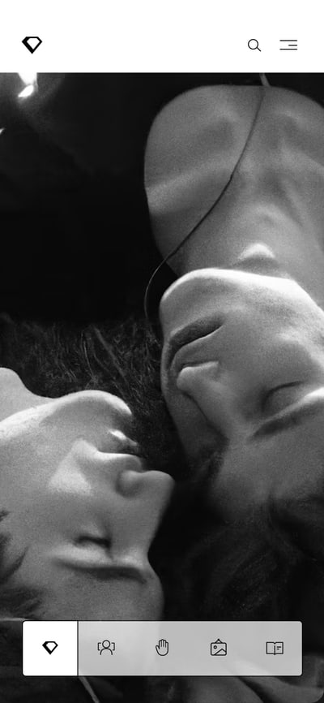
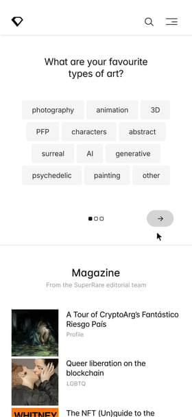
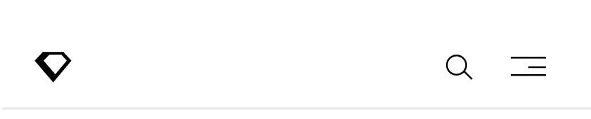
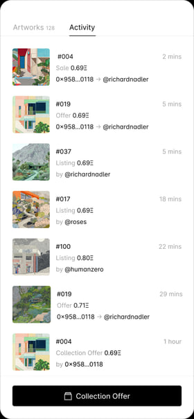
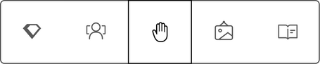
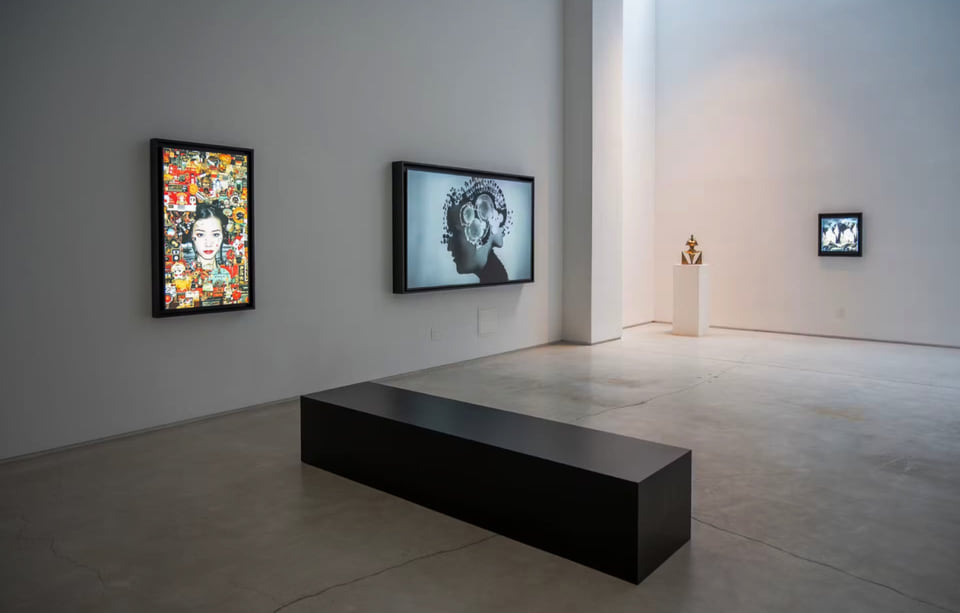
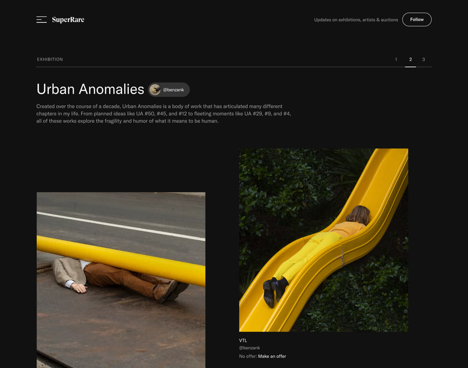
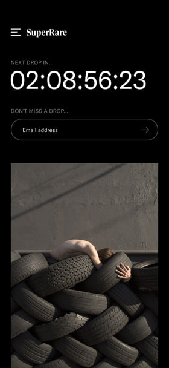

I led SuperRare’s shift from a busy marketplace to a curated, gallery-style platform.

Role
Head of Design, and the only hands-on designer. I worked with the founders on strategy and product vision, and designed the product UX and design system end to end.
Team & timeline
Product manager, engineering, a community specialist and the founders. 6 months in H1 2025, shipped iteratively.
Challenge
A bet on art, in a bear market. Demand was falling and other NFT platforms were shutting down.
- ~70% of artists had stopped publishing regularly.
- Top artists saw selling cheaply as damage to their reputation and price point.
- But OG artists, collectors and the core community were still here, and still spending.
We refocused on high-spending collectors and the most exciting artists, and overhauled the product to feel less like a marketplace and more like a high-end gallery.
Outcome
Outlasted the market collapse as a top-tier art platform. Loyal collectors stayed, and so did the calibre and price point of our artists.
- Repositioned from an NFT marketplace to a gallery-style platform.
- Exhibitions raised SuperRare’s fee on primary sales from 15% to 30%+.
- Featured artist list and curation UX attracted top artists.
Constraints
- Keeping the team aligned as we designed for a new audience.
- Crypto, Web3 and contract types constantly shifting.
- Start-up pace, with pressure to ship quickly.
Curation
As a team we defined curation as “making considered content choices that align with a specific aesthetic, vision or business case.”
A dynamic list of high-performing artists now leads the homepage, and onboarding matches new collectors to them from the first visit.


CMS structure
- Hero Any content type
- Featured CMS hand-picked
- Auctions Dynamic, ending soon + featured list
- Trending Search terms + override
- Recent activity Bids & sales priority
- Collections OG NFT collections
- Editorial Marketing, artist stories
- DAO, RARE, Help




Exhibitions
Expressive landing pages, artist interviews and fast-loading collection pages give work the respect a gallery would.
That presentation justified raising SuperRare’s fee on primary sales of exhibition artworks from 15% to 30%+.





Auctions
Auctions spark the most excitement from collectors, so the redesign amplifies the best moment: getting a bid.
Collectors can bid quickly with real-time feedback, and artists can set up and schedule an auction in seconds. Auctions make up ~38% of sales, and auction sales grew steadily through Q2 2025.



Explore
More ways to explore: bringing the NYC gallery online, magazine-style layouts, artwork drops, immersive mobile galleries and ways to showcase physical works alongside NFTs.






Profiles
Profile UX covers the needs of both artists and collectors. Profiles showcase the best artwork and provide sales data, and if someone is mentioned in any editorial or exhibition, it’s all visible here.